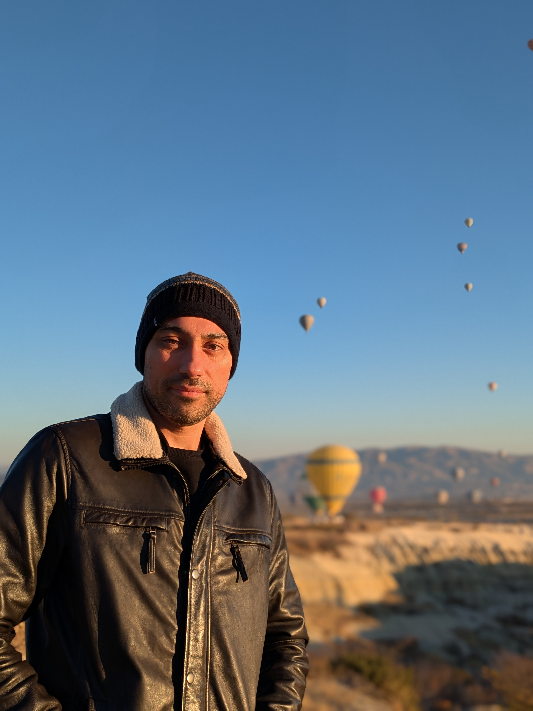

Hello, I'm Turkofil.
I love the Turkish language — and I want to share that love with you.
I graduated in 2016 from Marmara University in Istanbul with a degree in Teaching French as a Foreign Language (FLE). I then completed a pedagogical internship at the prestigious Saint-Joseph French High School in Istanbul, gaining valuable teaching experience in a highly demanding and stimulating francophone environment.
My academic journey later took me to Hungary, where I earned a Master's degree in International Relations from the Francophone University Centre at the University of Szeged. This experience broadened my understanding of global cultural and linguistic dynamics.
Turkish is my native language, and I have been teaching it with great enthusiasm to students of all levels for several years. Drawing on my background in language didactics and practical experience, I offer structured, interactive lessons tailored to your specific needs. I speak fluent English and French professionally, alongside pre-intermediate Spanish and beginner Hungarian.